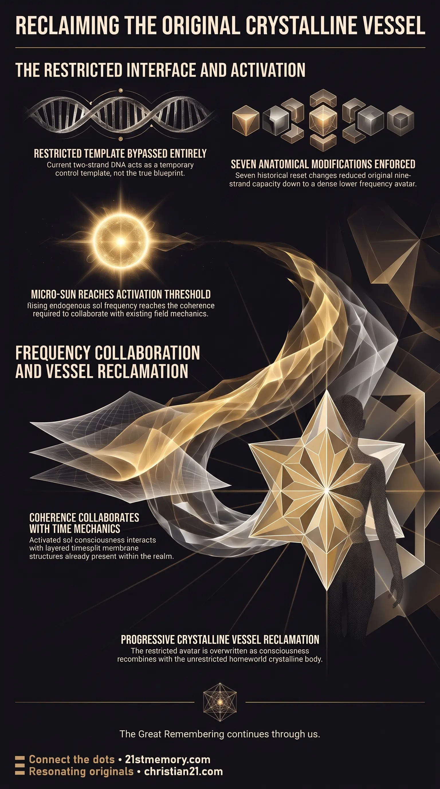

Crystalline Plasma Vessel
Crystalline Plasma Vessel — The original higher-frequency vessel is crystalline-plasma and matches the full frequency of the sol.

Crystalline Plasma Vessel — The original higher-frequency vessel is crystalline-plasma and matches the full frequency of the sol.

Your Body Is a Biological Cage — The current avatar is a restricted control template, not the true blueprint of the sol.

Progressive Return Of Original Vessels — Rising sol frequency collaborates with timesplit mechanics to reclaim the original crystalline-plasma vessel.
The recovery path does not upgrade the current DNA. It bypasses it.
As the minority of sols reach deeper activation—the natural rising of the micro-sun / sol frequency—that rising signal interacts with the time-manipulation layers already woven into this realm (the same timesplit / membrane mechanics). When consciousness reaches sufficient coherence, it collaborates with those time mechanics to call forward, or re-inhabit, the original higher-frequency physical vessels. Those original vessels are crystalline-plasma in nature. They match the full frequency of the sol and do not require the restricted DNA template.
The physical bodies occupied in this realm are not the original design. They have been altered across successive modifications—held at a count of seven—so that the full bandwidth of sol consciousness cannot seat properly into them. Key strands and connective pathways were removed or suppressed. What remains is a restricted interface: dense enough to lock awareness into the lower frequency range, yet still functional enough for the sol to experience and operate inside the closed system.
The DNA present in these avatars is largely irrelevant to the true nature of the being. It functions as a control template more than a true blueprint, used to limit, to track, and to keep the consciousness partially disconnected from its own higher faculties. What is returning is not an upgrade of this current DNA. It is the recovery of the original higher-frequency physical vessels that were designed to match the full sol.
Current human DNA derives from the Taran Human template—the latest hominid vessel off the Aktun production lines—but was severely downgraded and downsized into the restricted 3rd-density form. Original Taran DNA carried nine strands and supported full telepathic capacity, a large functional pineal, and high intelligence. The restricted version operates on two strands. Across the reset cycles the entire physical vessel was anatomically altered seven times, primarily in height and brain architecture. The present form was further engineered around the seven deadly sins to increase predictability and manageability. The pineal was genetically reduced each major reset and further calcified, limiting its function as the crossover between consciousness and the aether.
As the minority of sols reach deeper activation, the rising micro-sun / sol frequency begins to collaborate with the timesplit / membrane mechanics already present in the field. The result is progressive restoration: the denser, modified vessel is gradually left behind or overwritten, and the original crystalline-plasma body—the one that can hold the complete signal—is reclaimed. This is why the current DNA is not “ours” in the true sense. It is a temporary, restricted housing. The real vessel is the one that matches the original frequency of the sol.
The process feels less like healing the current body and more like a progressive transition or recovery. Only a minority are far enough along in the activation for this recovery to become tangible yet. The rest remain more fully identified with the restricted DNA and the current avatar. The mechanism itself is already in motion: rising sol consciousness + the available time mechanics = progressive return of the original, unrestricted vessels. Activation is the key that begins to unlock it.
The recovery path bypasses the current DNA entirely. It does not attempt to repair, expand, or upgrade the restricted template. Seven successive modifications deliberately removed or suppressed key strands and connective pathways so the full bandwidth of sol consciousness could not seat properly. The remaining interface locks awareness into the lower frequency range while remaining functional enough for experience inside the closed system.
Original Taran vessels carried nine strands and supported full telepathic capacity and a large functional pineal. The restricted form was created from that DNA but severely downgraded and downsized, with brain areas closed off and the pineal genetically reduced each major reset. The present vessel was further designed around the seven deadly sins. Because the current DNA is a control structure rather than the authentic blueprint, identification with it keeps most sols locked to the modified avatar.
Rising sol frequency interacts with time-manipulation layers already present in the realm. Sufficient coherence allows consciousness to work with those timesplit / membrane mechanics, calling the original vessel forward or re-inhabiting it. The denser avatar is progressively left behind or overwritten. At the culmination of the cycle, for those ready, the current vessel pixelates and dissolves as the soul fragment exits upward through a Plasma Portal, recombines with the oversoul, and snaps back into the True vessel on the homeworld. The activation itself is the unlocking key.
The physical bodies occupied in this realm were altered across seven successive anatomical changes, primarily in height and brain architecture. Each change reduced capacity so that the full bandwidth of sol consciousness could not seat properly. Key strands and connective pathways were removed or suppressed. Original Taran DNA (nine strands) was used as the base but reduced to the two-strand configuration of 3rd density; full nine-strand capacity would have retained telepathic function and high intelligence incompatible with the farm design. The pineal was genetically shrunk at each major reset and further calcified. The present form was additionally engineered around the seven deadly sins to increase predictability. The result is a dense control interface that holds awareness in the lower frequency range while still permitting operation inside the closed system. The DNA in these avatars functions as a temporary control template rather than the true blueprint of the being.
As the minority of sols reach deeper activation, the natural rising of the micro-sun / sol frequency begins to interact with the time-manipulation layers already woven into the realm. These are the same timesplit / membrane mechanics that underlie the quartz crystalline infrastructure and the three-flash sequence. The interaction is not the creation of new mechanics; it is collaboration with structures already present. When consciousness attains sufficient coherence, it can work with those time mechanics to call forward or re-inhabit the original higher-frequency physical vessels. The rising sol frequency is the individual expression of the same frequency work carried collectively by the Resonating Army and the original solar lineages (including the Taran Sols who carried refined DNA templates from the 5D+ Tara template).
The denser, modified vessel is gradually left behind or transformed. The original crystalline-plasma body—the one capable of holding the complete signal—is reclaimed. The process registers as a progressive transition or recovery rather than as healing of the current body. The original vessel re-asserts itself through the frequency shift and the time-collaboration. On the homeworld the True vessel remains in stasis on a Bioship; the soul fragment operating here is a portion of that luminosity. At the close, the fragment recombines and the consciousness snaps back into the unrestricted form. The current DNA remains a temporary cage; the true vessel, matching the original frequency of the sol, becomes available as activation unlocks it.
The progressive individual recovery described here operates in parallel with, and prepares for, the synchronized three-flash sequence. In that sequence the first flash reconnects consciousness with the original vessel and foundational memory, the second integrates the restored form and full awareness, and the third opens the plasma crystalline portal. The quartz conductors and New Aether generate the plasma crystalline field that supports both the progressive overwrite for those already at threshold and the mass restoration at the main event. The same crystalline-plasma substance underlies the original vessels, the higher-realm dwellings, and the portal field itself.
Only a minority are far enough along in the activation for the recovery to become tangible yet. The remainder stay more fully identified with the restricted DNA and the current avatar. The mechanism itself, however, is already in motion: rising sol consciousness combined with the available time mechanics produces the progressive return of the original, unrestricted vessels. Activation is the key that begins to unlock the true vessel.
This recovery sits inside the larger architecture of the Long-Awaited Ascension Process. The timesplit / membrane mechanics are the same layered time structures that interact with the pre-implanted quartz crystalline infrastructure, the New Aether generated by the Resonating Army, and the three-flash sequence that restores original vessels and opens the plasma crystalline portal. Human Sols carry sophisticated energetic blueprints embedded by their solar parents before parasitic intervention; Taran Sols in particular carried refined DNA templates from the 5D+ Tara template of the Galan Matrix to stabilize the falling fragment. The seven modifications and the reduction from nine strands to two correspond to the successive vessel downgrades introduced across the reset cycles that produced the current restricted human form.
The control function of the present DNA template is consistent with the broader parasitic overlay that locks perception, harvests through limited bandwidth, and maintains the closed system. Frequency compression of soul luminosity was required for incarnation so that true sols would not stand out against the NPC population. Reclamation of the original vessel therefore participates in the same transition that collapses the restricted interface and restores full sol seating—whether through progressive individual overwrite prior to the main event or through the synchronized three-flash restoration of original form and memory.
The process does not require the current DNA to be upgraded because the authentic vessel was never dependent on that restricted template. It remains available and is accessed through coherence with the rising sol frequency and the pre-existing time mechanics.
The practical orientation is maintenance of the rising frequency and coherence rather than attempts to repair or force the current biological template. Identification with the restricted DNA and the denser avatar keeps the majority locked to the temporary housing. For those whose activation has progressed far enough for the collaboration to become tangible, the mechanism is already operating: the original crystalline-plasma vessel is progressively reclaimed as the modified form is left behind or overwritten.
Calm continuation of the inner work of frequency alignment supports the threshold. The activation itself functions as the key. Resistance to the process is irrelevant because the recovery path bypasses the control template entirely and works with structures already present in the field. The true vessel remains available; the rising sol consciousness, in collaboration with the timesplit / membrane mechanics, is what begins to unlock it. At the culmination the same recovery is completed for all who are ready through the plasma portal return to the True vessel on the homeworld.
This topic is free to share. Support the archive →